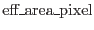
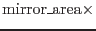
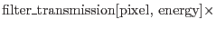
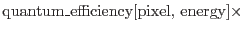
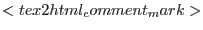

|  |  | ||
|  | |||
|  | |||
|  | (1) |
The filter_transmission and
quantum_efficiency values for each pixel
are provided by the calibration data selected.
The mirror area includes vignetting: for point
sources this is calculated once at the source
position, whereas for extended sources it is
computed at the position of each detector map pixel.